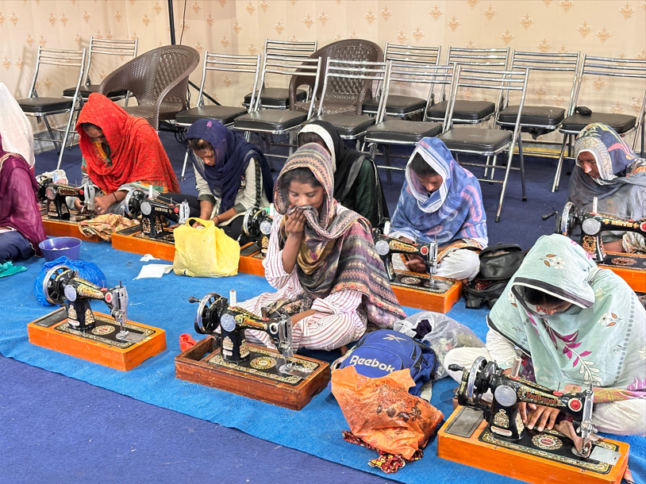
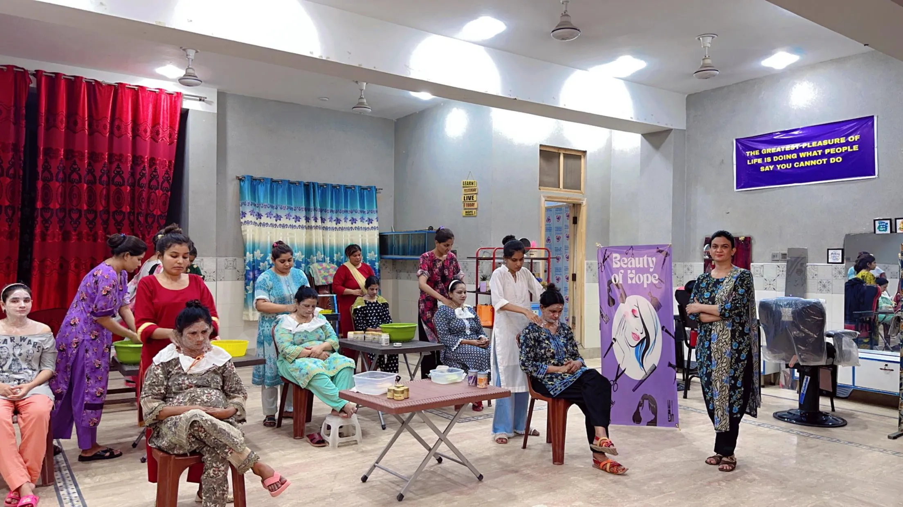
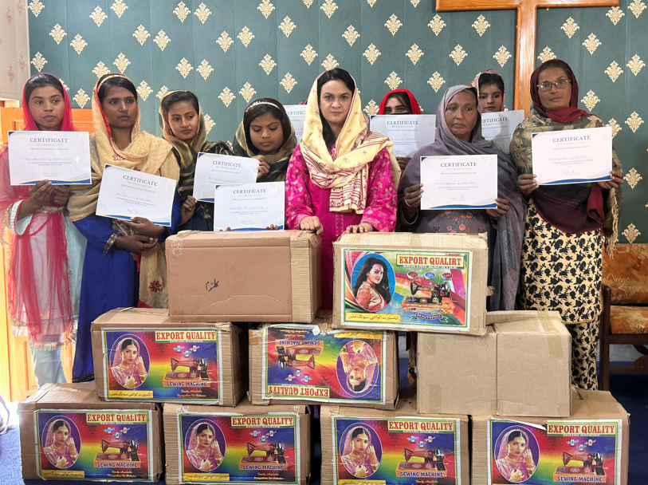
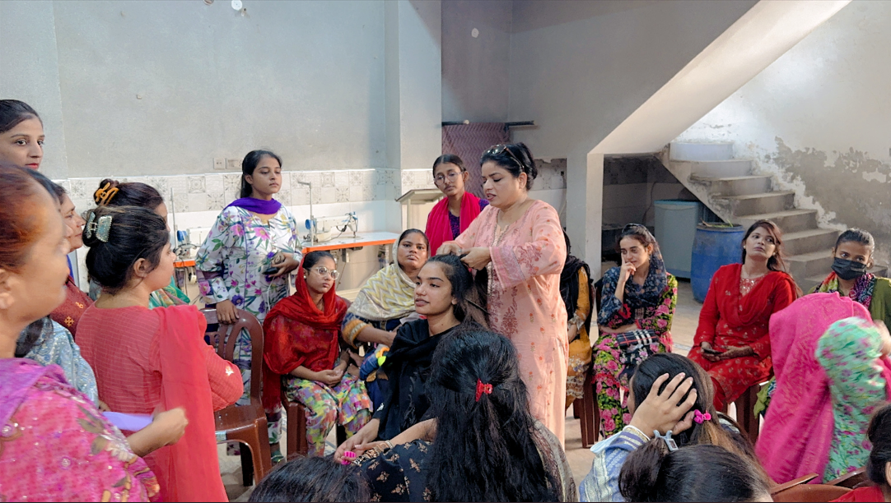

SHARING SMILES
HOPE BEHIND EVERY SMILE
HOPE BEHIND EVERY SMILE
Vocational Training
Sharing Smiles Pakistan believes that practical skills can transform lives, strengthen families, and create long-term opportunities. Through our vocational training programs, we equip young women with valuable skills that help them earn an income, support their families, and build a brighter future.
By providing training, mentorship, and practical resources, we are helping individuals move toward greater confidence, independence, and hope.
Training Gallery




Why Vocational Training?
Many young women face limited educational and employment opportunities due to poverty and social challenges. Without practical skills, it becomes difficult to support themselves and their families.
Vocational training helps create pathways toward financial stability, confidence, and personal growth.
By teaching practical skills, we are empowering individuals to build a better future for themselves and those around them.
Threads of Hope
Threads of Hope is a six-month sewing and tailoring training program designed specifically for young women.
Participants receive hands-on instruction in sewing techniques, garment making, tailoring skills, and practical business knowledge.
At graduation, each participant receives a sewing machine, allowing her to begin generating income and supporting her family.
Beauty of Hope
Beauty of Hope provides beauty parlor and cosmetology training for young women seeking practical career opportunities.
Participants learn beauty treatments, hair styling, salon techniques, and professional customer service.
After completing the program, many trainees are able to begin working independently or pursue employment opportunities.
What We Provide
Practical instruction that prepares students for real-world opportunities.
Encouragement and support throughout the training process.
Building confidence through hands-on learning and practice.
Equipping graduates with tools that can help support their families.
Lasting Impact
Vocational training does more than teach a skill. It strengthens families, creates financial stability, builds confidence, reduces poverty, and creates future opportunities.
When one individual gains a skill, an entire family can benefit.
Matthew 5:16
Your partnership helps provide training materials, sewing equipment, mentorship, and practical opportunities for young women seeking a better future.
Together we can empower lives, strengthen families, and create lasting change through vocational training.